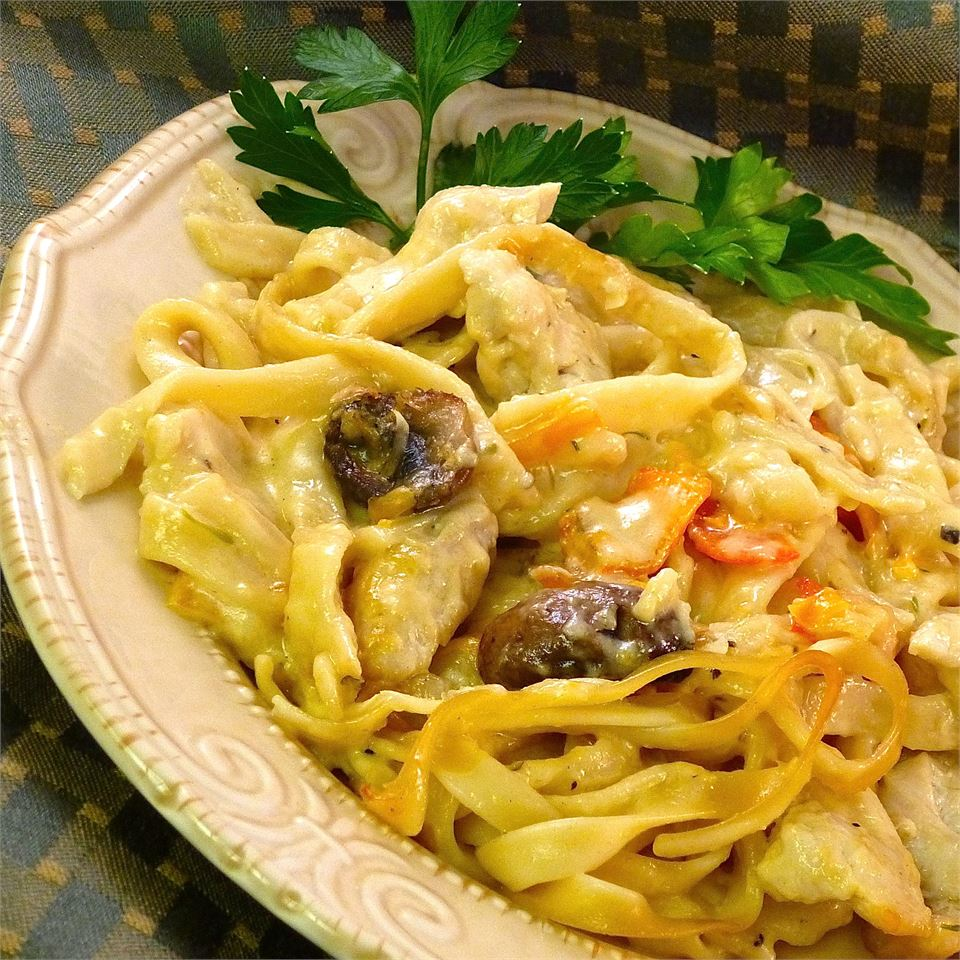

Chicken Tetrazzini
By LittleChef

Delicious and creamy! This recipe is my brother's favorite of everything that I cook,
and the first one I mastered.
Nutrition facts:
Per serving:
478 calories; protein 23.6g; carbohydrates 34.8g; fat 27.5g; cholesterol 92.8mg;
sodium 427.3mg.
Full Nutrition
Ingredients
- cooking spray
- 1/2 pound fettuccine pasta
- 1 tablespoon olive oil
- 2 skinless, boneless chicken breast halves, cut into strips
- 1 and 1/2 tablespoons margarine
- 1/2 cup sliced mushrooms (Optional)
- 1/2 small onion, finely chopped
- 2 cloves garlic, minced
- 1/2 red bell pepper, cubed
- 2 tablespoons all-purpose flour
- 1 cup chicken broth
- 3/4 cup heavy whipping cream
- 3/4 cup milk
- 10 tablespoons shredded Swiss cheese, divided
- 10 tablespoons shredded Cheddar cheese, divided
- 6 tablespoons shredded Parmesan cheese, divided
- 1 pinch dried thyme, or to taste
- 1 pinch salt and ground black pepper to taste
Directions
- Step 1
Preheat oven to 350 degrees F (175 degrees C). Spray a casserole dish with
cooking spray.
- Step 2
Fill a large pot with lightly salted water and bring to a rolling boil.
Stir in the fettuccine, bring back to a boil, and cook pasta over medium
heat until cooked through but still firm to the bite, about 8 minutes. Drain.
- Step 3
Heat olive oil in a skillet over medium heat; cook and stir chicken strips
in the hot oil until no longer pink, about 10 minutes. Remove chicken to a bowl,
leaving pan drippings in skillet. Melt margarine in the hot skillet; cook and stir
mushrooms, onion, and garlic in skillet until mushrooms have softened and given up
their liquid, about 5 minutes. Stir red bell pepper into mixture and sprinkle with flour.
Stir to coat and cook, stirring constantly, for 1 minute.
- Step 4
Slowly mix chicken broth into vegetables, stirring to form a thick sauce; mix cream
and milk into sauce. Simmer until thickened, about 1 minute. Mix 1/2 cup Swiss cheese,
1/2 cup Cheddar cheese, 1/4 cup Parmesan cheese, thyme, salt, and black pepper into
sauce and simmer until cheese have melted and combined with sauce.
- Step 5
Spread half the cooked fettuccine pasta into bottom of prepared casserole dish,
top with half the chicken and half the cream sauce. Repeat layers once more and
sprinkle remaining 2 tablespoons Swiss cheese, 2 tablespoons Cheddar cheese,
and 2 tablespoons Parmesan cheese over the top.
- Step 6
Bake in the preheated oven until cheese topping is nicely browned, 25 to 30 minutes.
Home:
Odin Recipes